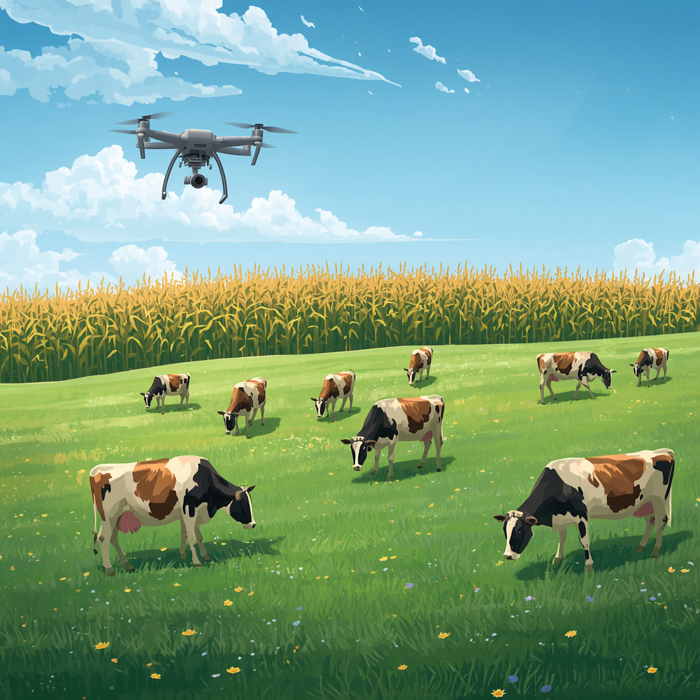

A agricultura sustentável ganha espaço no debate global em um momento de pressão sobre custos, segurança alimentar, energia e mudanças climáticas. Segundo Luciana Gorab, especialista em Planejamento Estratégico de Vendas, esse cenário coloca o Brasil em posição de destaque por unir produtividade, inovação e capacidade de adaptação no campo.
Enquanto temas como inteligência artificial, guerras comerciais e a nova corrida energética dominam parte das discussões internacionais, uma transformação menos ruidosa vem fortalecendo o papel brasileiro na inovação agrícola. O avanço de tecnologias baseadas no uso de microrganismos nas lavouras mostra como o país pode contribuir para reduzir a dependência de fertilizantes químicos, um dos insumos mais caros e sensíveis da produção de alimentos.

O trabalho da microbiologista brasileira Mariangela Hungria ganhou projeção internacional após décadas dedicadas ao desenvolvimento de bactérias capazes de substituir parte dos fertilizantes industriais. Na prática, esses microrganismos capturam nitrogênio diretamente do ar e o transferem para as plantas, ampliando a eficiência produtiva e reduzindo a necessidade de insumos nitrogenados.
“Num planeta preocupado com segurança alimentar, inflação e mudanças climáticas, talvez uma das soluções mais sofisticadas do século esteja justamente onde o Brasil sempre foi forte: no campo. Porque, às vezes, o verdadeiro ouro não está no solo. Está na inteligência de quem aprende a trabalhar com ele”
O reconhecimento internacional veio com o World Food Prize, frequentemente chamado de Nobel da Agricultura. Mais do que uma premiação, o destaque reforça uma mudança de percepção sobre o Brasil, que deixa de ser visto apenas como exportador de commodities e passa a ocupar espaço como protagonista em tecnologia agrícola sustentável.
Quais os principais benefícios da Inteligência Artificial no campo?
A agricultura está passando por diversas transformações à medida que vai se modernizando e adotando inovações tecnológicas. A Inteligência Artificial (IA) faz parte desse movimento e promete revolucionar o setor, oferecendo ferramentas que permitem um uso mais eficiente dos recursos, melhoram a gestão agrícola e aumentam a resiliência das práticas agrícolas frente às adversidades.
Um dos principais benefícios da IA no campo é a possibilidade de economizar a utilização de recursos naturais. É possível contar com sistemas de irrigação inteligentes, sensores e sistemas que monitoram constantemente as condições do solo e das plantas, ajustando a irrigação de acordo com a necessidade real das culturas, o que reduz o desperdício de água e melhora a saúde das plantas.
Por meio de equipamentos como drones equipados com câmeras dotadas de sensores RGB e multiespectrais, é possível capturar imagens detalhadas processadas por IA para detectar indícios de infestação por ervas daninhas, incidência de doenças, planejamento do sentido de plantio através de curvas em nível e mapeamento preciso de falhas para replantio.
A IA possibilita a análise de dados climáticos e históricos de produção para prever o rendimento das colheitas e antecipar eventos climáticos extremos. Isso ajuda os agricultores a planejar melhor suas atividades, otimizar a logística de colheita e minimizar perdas.
Contar com tratores, pilotos automáticos e outras máquinas agrícolas autônomas operadas via sistemas de navegação por GPS e sensores avançados permite realizar tarefas como plantio, colheita e pulverização com altíssima precisão, reduzindo a necessidade de mão de obra intensiva.
A aplicação seletiva em taxa variável reduz o estresse das plantas. Adicionalmente, a Inteligência Artificial possibilita a rastreabilidade total de cada etapa da cadeia de suprimentos, desde a fazenda até a mesa do consumidor, elevando a transparência e segurança alimentar.
A IA age como peça-chave para a sustentabilidade, pois torna possível realizar uma aplicação cirúrgica e precisa de água, fertilizantes e defensivos agrícolas para reduzir significativamente o uso desses insumos, diminuindo drasticamente o impacto ambiental.